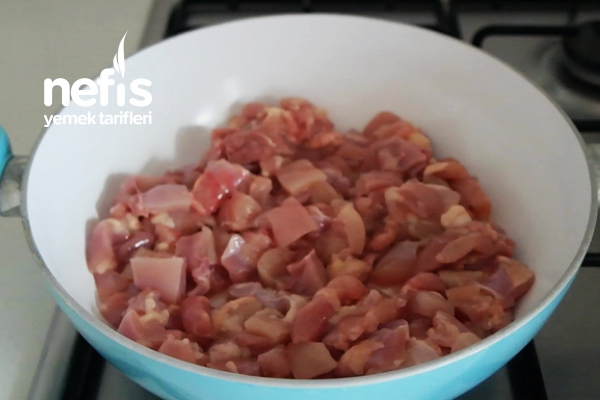
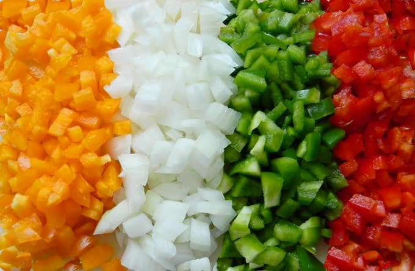
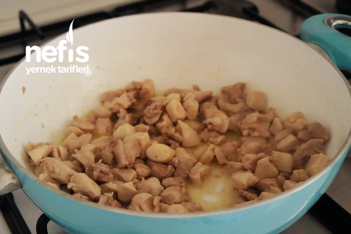
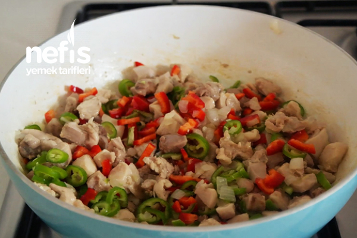
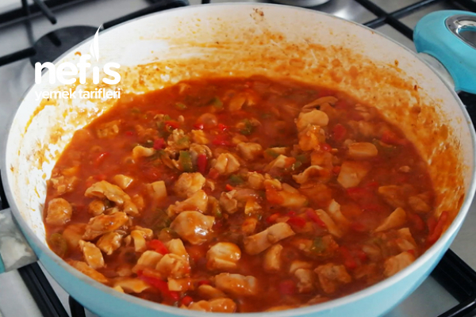

Tavuk etini kuşbaşı doğrayın.

Soğanları yemeklik, biberleri julyen doğrayın, domatesleri de küp küp doğrayın.

Kısık ateşte tavukları arada karıştırarak kavurun.

Suyunu biraz çektikten sonra soğanları, ince kesilmiş sarımsağı ve biberleri ekleyin.

Biberler de sotelenince domatesi, salçayı, baharatları ve tuzu ekleyip pişirmeye devam edin